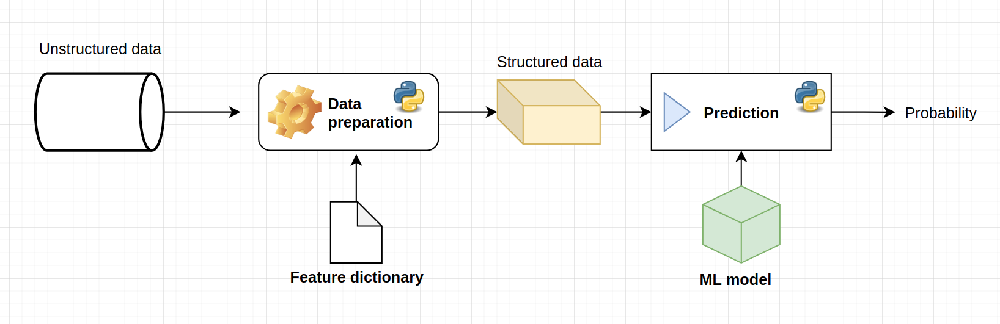

Basic ML serving¶
In the previous chapter we have created two very important objects and stored them in files:
ml-model.pkl - the fitted on data and ready to be used machine learning model.
ml-features.json - a dictionary containing the features that the model was trained with. NOTE: it is very important to preserve the exact key sequence in all the future use of the model.
The file structure is as follows:
├── ml_models
│ ├── ml-features.json
│ └── ml-model.pkl
No matter what type of serving - simple or complex - we are doing, these two objects is a minimum requirement if we want anyone to use our ML solution.
A basic chart for ML model serving is the following:

The steps are the following:
Preparate the raw data for the model
Use the model with the prepared data
Store/use the predictions
Importing Python packages¶
# Json reading
import json
# Pickle reading
import pickle
# Operating system functionality
import os
# Input simulation
from ipywidgets import interactive, widgets, interact
from IPython.display import display
# Data wrangling
import pandas as pd
Reading the model objects¶
Before any serving can be done, the necessary objects need to be loaded into the host computer memory. This simple fact is true even for the most complex real time ML model serving systems: somewhere, between all the clouds and servers, all the objects are loaded to computer memory and is used in runtime.
# Saving the path to the ML folder
_ml_folder = os.path.join("..", 'ml_models')
_ml_model_path = os.path.join(_ml_folder, "ml-model.pkl")
_ml_features_path = os.path.join(_ml_folder, "ml-features.json")
# Reading the model object
model = pickle.load(open(_ml_model_path, 'rb'))
features = json.load(open(_ml_features_path, 'rb'))
# Printing out the features
print(features)
{'bomb_planted': 'int64', 'ct_health_share': 'float64', 'ct_armor_per_player': 'float64', 'ct_money_share': 'float64', 'ct_players_alive_diff': 'float64', 'ct_defuse_kit_present': 'int64'}
Model serving¶
Simulating input¶
To test out our ML model, we will simulate an input for it.
# Has the bomb been planted?
bomb_planted = True
# CT health share of total; the range is (0, 1.0)
ct_health_share = 0.75
# CT armor per player; the range is (0, 100.0)
ct_armor_per_player = 60.0
# CT money share of total money in economy; the range is (0, 1.0)
ct_money_share = 0.68
# The difference between the alive CT and T players; the values are [-4, -3, ..., 3, 4]
ct_players_alive_diff = 1
# Boolean for the presence of the difusal kit
ct_defuse_kit_present = False
# Creating a dataframe which will be used as raw input
raw_input = {
"bomb_planted": bomb_planted,
"ct_health_share": ct_health_share,
"ct_armor_per_player": ct_armor_per_player,
"ct_money_share": ct_money_share,
"ct_players_alive_diff": ct_players_alive_diff,
"ct_defuse_kit_present": ct_defuse_kit_present
}
# Displaying the raw input
print(raw_input)
{'bomb_planted': True, 'ct_health_share': 0.75, 'ct_armor_per_player': 60.0, 'ct_money_share': 0.68, 'ct_players_alive_diff': 1, 'ct_defuse_kit_present': False}
Input preprocesing function¶
Lets define a function that prepares the input for the model given the raw input dictionary and the saved features JSON object.
def prepare_input(raw_input_dict: dict, features: dict) -> pd.DataFrame:
"""
Function that accepts the raw input dictionary and the features dictionary and returns a pandas dataframe with the input prepared for the model.
"""
# Extracting the key names
feature_names = list(raw_input_dict.keys())
original_feature_names = list(features.keys())
# Ensuring that all the keys present in **features** are in **raw_input_dict**
missing_features = set(original_feature_names) - set(feature_names)
if len(missing_features):
return print(f"Missing features in input: {missing_features}")
# Iterating and preprocesing
prepared_features = {}
for feature in feature_names:
# Extracting the type of the feature
feature_type = features.get(feature)
# Converting to that type
feature_value = raw_input_dict.get(feature)
if feature_type == "float64":
feature_value = float(feature_value)
if feature_type == "int64":
feature_value = int(feature_value)
# Saving to the prepared features dictionary
prepared_features[feature] = feature_value
# Creating a dataframe from the prepared features
df = pd.DataFrame(prepared_features, index=[0])
# Ensuring that the names are in the exact order
df = df[original_feature_names]
# Returning the dataframe
return df
# Testing out the function
input_df = prepare_input(raw_input, features)
print(f"Preprocesed input for ML model:\n{input_df}")
Preprocesed input for ML model:
bomb_planted ct_health_share ct_armor_per_player ct_money_share \
0 1 0.75 60.0 0.68
ct_players_alive_diff ct_defuse_kit_present
0 1.0 0
Using the model¶
Now that we have the input with the exact same structure with which the model was built, we can use that input for extracting predictions.
# Getting the probabilities
p = model.predict_proba(input_df)[0]
# Initial results
print(p)
[0.26723242 0.7327676 ]
The extracted probabilities is vector of two and defines the following probabilities:
And
Note that:
In other words, the first coordinate is the probability that CT team will lose with the given inputs and the second coordinate is the probability that CT will win with the given inputs.
These two probabilities is the final output of the machine learning model. How we use these results is a matter of our fantasy.
Simulating the whole serving¶
To play around with the model you can use the interactive session bellow. We will use the ipywidgets framework: https://ipywidgets.readthedocs.io/.
Creating the input selections¶
# Boolean for bomb planting event
bomb_planted_widget = widgets.Checkbox(
value=False,
description='Has the bomb been planted?',
disabled=False
)
# CT health share of total; the range is (0, 1.0)
ct_health_share_widget = widgets.FloatSlider(value=0.5, min=0.0, max=1.0, step=0.05, description='CT health share of total')
# CT armor per player; the range is (0, 100.0)
ct_armor_per_player_widget = widgets.FloatSlider(value=50.0, min=0.0, max=100.0, step=1.0, description='CT armor per player')
# CT money share of total money in economy; the range is (0, 1.0)
ct_money_share_widget = widgets.FloatSlider(value=0.5, min=0.0, max=1.0, step=0.05, description='CT share of money compared to total money in economy')
# The difference between the alive CT and T players; the values are [-4, -3, ..., 3, 4]
ct_players_alive_diff_widget = widgets.Dropdown(
options=list(range(-4, 5, 1)),
value=0,
description='The difference between the alive CT and T players',
disabled=False,
)
# Boolean for the presence of the difusal kit
ct_defuse_kit_present_widget = widgets.Checkbox(
value=False,
description='Is there a difusal kit present in CT team?',
disabled=False
)
Interactive simulation¶
def get_prob(
bomb_planted,
ct_defuse_kit_present,
ct_health_share,
ct_armor_per_player,
ct_money_share,
ct_players_alive_diff,
):
"""
Interactive session to experiment with the created ML model
"""
# Creating the raw input dictionary
raw_input = {
"bomb_planted": bomb_planted,
"ct_defuse_kit_present": ct_defuse_kit_present,
"ct_health_share": ct_health_share,
"ct_armor_per_player": ct_armor_per_player,
"ct_money_share": ct_money_share,
"ct_players_alive_diff": ct_players_alive_diff
}
# Preparing the input for the model
raw_input_df = prepare_input(raw_input, features)
# Getting the probabilities
p = model.predict_proba(raw_input_df)[0]
p_win = round(p[1], 3)
# Returning the probabilities
print(f"Probability of CT winning: {p_win}")
# Making the interactive session
prob_widget = interactive(
get_prob,
bomb_planted=bomb_planted_widget,
ct_defuse_kit_present=ct_defuse_kit_present_widget,
ct_players_alive_diff=ct_players_alive_diff_widget,
ct_health_share=ct_health_share_widget,
ct_armor_per_player=ct_armor_per_player_widget,
ct_money_share=ct_money_share_widget,
)
# Displaying the widget
prob_widget
Limitations of this approach¶
This notebook is perfect to play around with the model and to see how certain feature values influence the model. This interactive notebook could be called as a sufficient serving API for a data scientist for debugging reasons or for presentation of the results.
But we cannot call this type of serving production grade serving for several reasons:
The enduser would have to download the notebook, the model and the feature list every time there is an update.
Different machines may produce different results of the notebook (or would produce an error)
It is hard to integrate a jupyter notebook to any working systems that the enduser may have.
The code in the notebook would not deal well with a batch of inputs (>1 row in the dataset)
In the next chapter of this book we will finaly begin building production grade serving.